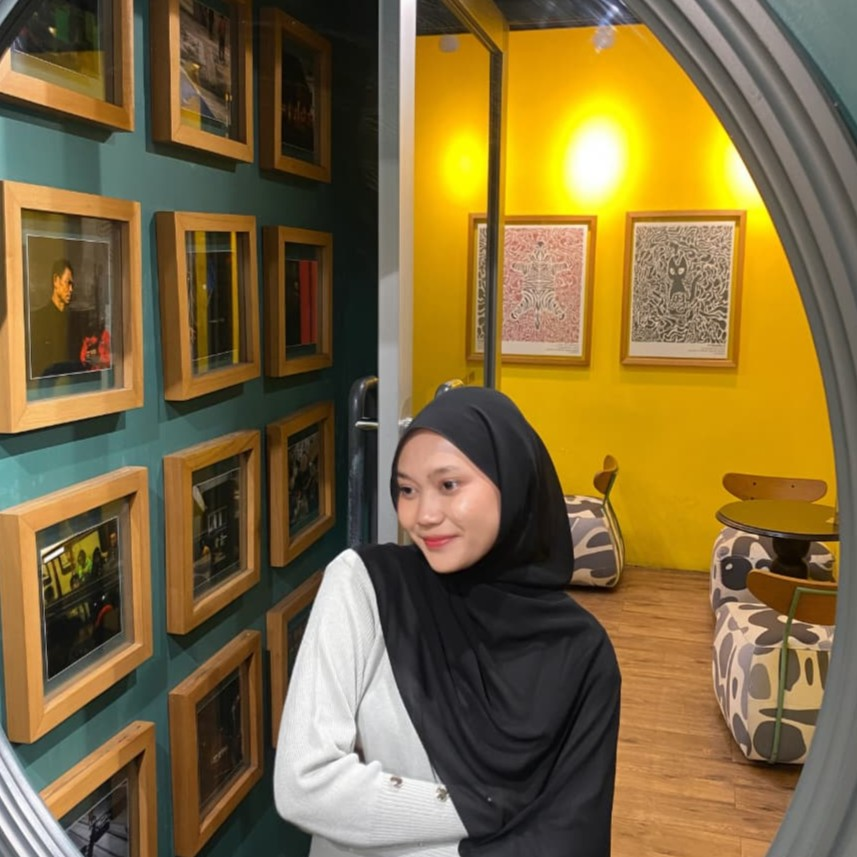

📞 Let's Connect
I'd love to connect with you!



Information Systems Student
Passionate about Web Development and Digital Innovation.
Explore More ↓I'm an Information Systems student who enjoys exploring new ideas, especially in web development and technology. I love creating simple yet meaningful projects while continuing to improve my skills. For me, every project is an opportunity to learn, grow, and become a better version of myself.
My journey in Information Systems wasn't what I expected. It wasn't the major I had originally planned to choose, and I started with almost zero knowledge about coding. At first, everything felt confusing and challenging, but instead of giving up, I decided to keep learning one step at a time. Every lesson, every mistake, and every small achievement helped me become more confident.
Today, I genuinely enjoy learning about web development and exploring new technologies. Looking back, I realize that Information Systems has become much more than just my major—it has become the place where I discovered my passion. It reminds me that every small step forward is still progress, and that learning never truly stops. I'm excited to keep learning, creating, and seeing where this journey takes me.
I'd love to connect with you!